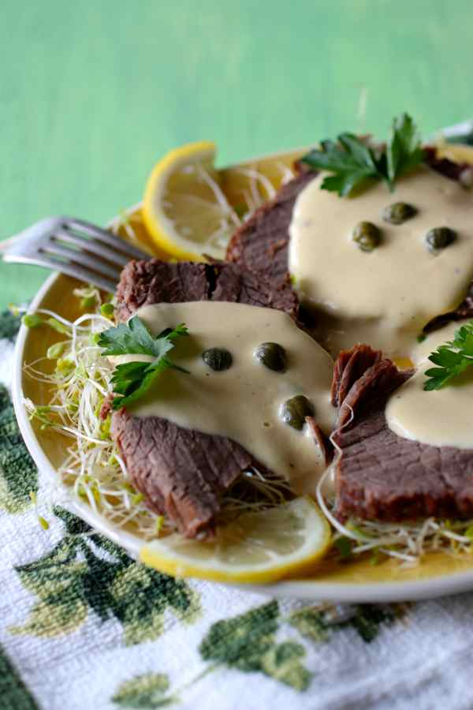

Vitel toné

What is Vitel toné?
Vitel toné, also called ternera atunada, is a Christmas classic recipe that is originally from Italy where it’s called vitello tonnato.
It is composed of slices of veal that are served with a creamy anchovy and tuna-based creamy sauce.
Ingredients
- 2 to 3 lb peceto, beef or veal round steak, roast eye of round
- 1 onion, quartered
- 1 carrot, diced
- 1 celery stal, cut in 4-inch/10cm sections
- ½ bunch parsley, chopped
- 1 bay leaf
- 3 cloves garlic, crushed
For the sauce
- 8 hard-boiled eggs
- 1 cup olive oil
- 1 can anchovie (about 10 filets)
- 2(5 oz.) cans tuna (natural or oil)
- Juice of ½ lemon
- 1 cup mayonnaise
- 2 tablespoons mustard
- 2 tablespoons capers
- Salt
- Pepper
Steps
- Clean meat of fat. In a large pot, sear meat for a couple minutes on each side.
- Add the onion, carrot, garlic, celery, parsley, bay leaf, and cover with water. Add salt to taste. Cook until just tender, about an hour and a half, or 30 minutes in a pressure cooker.
- Allow meat to cool in the liquid. Take meat out and cut into very thin slices with an electric knife or a sharp knife.
Sauce
- In a blender, add yolks of 8 hard-boiled eggs and well drained tuna. Add olive oil gradually while blending and blend until obtaining a smooth and homogeneous sauce.
- Add about ½ cup (150ml) of the strained cooking broth and continue blending. Add the mustard, anchovies, mayonnaise, lemon juice and black pepper. Blend until well mixed. If the sauce is not liquid enough, add more broth.
- Arrange sliced meat on a large platter and cover with the sauce. Sprinkle capers on top.
- Grate the remaining whites of the hard-boiled eggs, and sprinkle around the meat on the edges of the platter.
- Leave the vitel tone a few hours in the refrigerator so the meat can absorb the flavors. Serve cold or at room temperature.